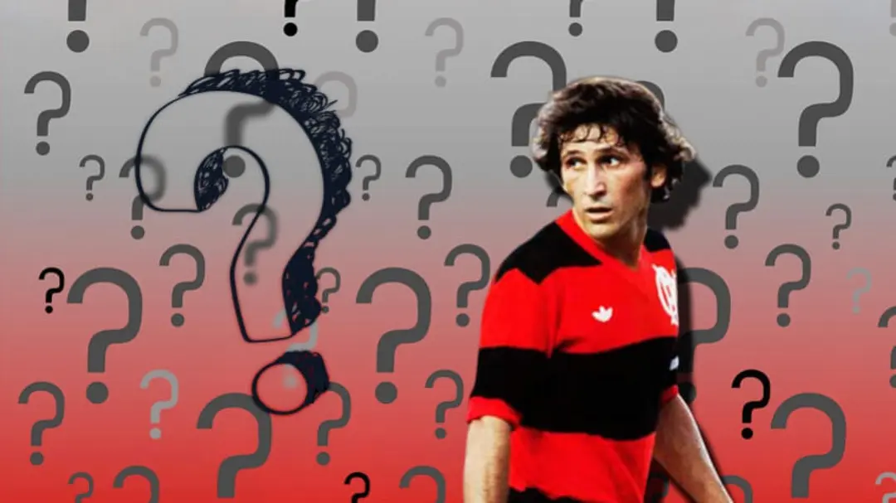

Quem é
Arthur Antunes Coimbra (Rio de Janeiro, 3 de março de 1953), mais conhecido como Zico, é um dirigente desportivo, ex-treinador e ex-futebolista brasileiro que atuava como meio-campista, sendo considerado um dos melhores jogadores da história. Atualmente é diretor técnico do Kashima Antlers.
Carreira
Notabilizou-se como o líder da vitoriosa trajetória do Flamengo nas décadas de 1970 e 1980, com ápice nas conquistas da Copa Libertadores da América e da Copa Intercontinental pela equipe carioca, além dos títulos do Campeonato Brasileiro de 1980, 1982, 1983 e da Copa União de 1987 (um dos módulos do Campeonato Brasileiro daquele ano) e também pela Seleção Brasileira nas Copas do Mundo de 1978, 1982 e 1986. É considerado por muitos especialistas, profissionais do esporte e, em especial, pelos torcedores do Flamengo, o maior jogador da história do clube, e um dos maiores futebolistas brasileiros desde Pelé, tendo ganhado a alcunha de Pelé Branco.
Segundo a IFFHS, que considera apenas os gols marcados em torneios nacionais de primeira divisão e por seleções principais, Zico é o décimo oitavo maior artilheiro da história do futebol, com 556 gols em 777 partidas oficiais.[5] Em 1979, marcou 89 gols, porém 73 gols foram contabilizados oficialmente. Zico é, também, o maior artilheiro da história do Estádio do Maracanã, com 334 gols em 435 partidas. Marcou 137 gols em Campeonatos Brasileiros.
De acordo com o site goal.com, marcou 101 gols de falta em jogos oficiais, sendo o recordista na história do futebol em gols marcados desta forma.[7] Mas esse número foi desmentido pelo próprio Zico no canal do Youtube Charla Podcast. Considerando sua contagem (que conta jogos amistosos) o Galinho de Quintino teria marcado 84 gols de falta. Muito por conta disso, em 2001 ele foi eleito pela revista Placar o maior cobrador de faltas do futebol brasileiro no século XX. Já em 2016, em uma pesquisa promovida pelo portal GloboEsporte.com, ele foi eleito por jogadores e por internautas como o maior batedor de faltas brasileiro da história.
Mais que um exímio batedor de faltas, Zico apresentava dribles fáceis em seu repertório futebolístico, excelente visão de jogo e uma inteligência acima do normal. Por isso, para muitos jornalistas esportivos, como Celso Unzelte, Zico foi o mais completo jogador que o Brasil já teve.
Em 1981 foi eleito o Melhor Futebolista do Mundo pela revista Guerrin Esportivo e em 1983, foi eleito o Melhor Futebolista do Mundo do Ano pela World Soccer. Conquistou por três vezes o Prêmio de Melhor Jogador da América do Sul (1977, 1981, e 1982),[13] sendo o recordista de conquistas. É um dos brasileiros a figurar no Hall da Fama da FIFA (outros são Pelé, Garrincha, Didi, Ronaldo, Ronaldinho Gaúcho e Roberto Carlos).[14] Em julho de 2012, figurou na "61ª posição entre os 100 maiores brasileiros de todos os tempos" em concurso realizado pelo SBT com a BBC de Londres. Em 2020, foi indicado pela FIFA como um dos elegíveis para o Time dos Sonhos da Bola de Ouro.
Títulos
| Flamengo | ||||||
|---|---|---|---|---|---|---|
| Copa Intercontinental | 1981 | |||||
| Copa Libertadores da América | 1981 | |||||
| Campeonato Brasileiro | 1980 | 1982 | 1983 | |||
| Copa União | 1987 | |||||
| Campeonato Carioca | 1972 | 1974 | 1978 | 1979 | 1981 | 1986 |
| Kashima Antlers | ||||||
| Copa Suntory Series | 1993 | |||||
| Seleção Brasileira | ||||||
| Taça do Atlântico | 1976 | |||||
| Copa Roca | 1976 | |||||
| Copa Rio Branco | 1976 | |||||
| Taça Oswaldo Cruz | 1976 | |||||
| Torneio Bicentenário dos EUA | 1976 | |||||
| Taça Brasil-Inglaterra | 1981 | |||||
10 curiosidades sobre a carreira e a vida do maior ídolo da história do Flamengo
- Nascido em Quintino, o jovem Arthur começou sua trajetória no esporte jogando futsal pelo Juventude, equipe tradicional do bairro so subúrbio carioca. A história dele no Flamengo começou aos 14 anos de idade, após ser indicado por Celso Garcia, radialista amigo da família, que o viu jogar em um torneio de futsal pelo River FC. Nessa partida, Zico marcou 10 dos 15 gols do seu time.
- Logo na infância, o apelido Zico foi dado por Ermelinda Rolim, prima de Arthur. Ao chegar ao Flamengo, Zico ganhou outra alcunha: "Galinho", por causa do seu físico franzino, marcado pela baixa estatura e pela magreza. Por fim, ele se tornou o Galinho de Quintino , por causa do bairro onde foi criado e morava na época.
- Após chegar às categorias de base em 1967, Zico deu os primeiros passos no time profissional em julho de 1971, com apenas 18 anos. E a partida de estreia foi logo um clássico contra o Vasco, no Maracanã. Com a camisa 9, o jovem foi escalado pelo treinador Fleitas Solich na ponta-direita e participou da vitória por 2 a 1, com direito a gol salvador de Fio Maravilha no último minuto.
- Após a estreia aos 18 anos, Zico ainda passou por um trabalho especial para ganhar porte físico e, a partir disso, entrou para a história do clube. Entre 1971 e 1983, disputou 635 partidas e marcou 476 gols. De quebra, liderou o Flamengo nas conquistas da Libertadores e do Mundial, em 1981, além de três Campeonatos Brasileiros (1980, 1982 e 1983) e seis Cariocas. Em 1983, foi vendido à Udinese, da Itália, por 4 milhões de dólares.
- Após 53 jogos e 30 gols pelo clube italiano, Zico decidiu voltar ao Flamengo no segundo semestre de 1985. Mas, em agosto daquele ano, a alegria virou tensão na partida contra o Bangu, pelo Carioca. Ao sofrer um carrinho violento de Márcio Nunes, o camisa 10 sofreu torções nos dois joelhos e no tornozelo esquerdo, além de escoriações na perna direita e uma contusão no perônio esquerdo, que quase o fizeram pendurar as chuteiras. Foram necessárias três cirurgias, e o Galinho voltou a jogar no ano seguinte, mas nunca mais da mesma forma.
- Mesmo sem conquistar a Copa do Mundo, Zico gravou seu nome entre os maiores da história da Seleção Brasileira. Entre 1976 e 1989, ele disputou um total de 71 partidas oficiais e marcou 48 gols marcados. Ainda hoje é o quinto maior goleador, ficando atrás de Pelé (77 gols), Neymar (64), Ronaldo (62) e Romário (55).
- Após pendurar as chuteiras em 1989, Zico voltou ao futebol em 1991 para um desafio no futebol japonês. Peça importante do plano de popularização do esporte no país asiático, o meia disputou três temporadas pelo Kashima Antlers (à época chamado de Sumitomo Metals) - com 48 gols em 65 jogos. Desde então, ele é idolatrado no Japão e atualmente trabalha como diretor técnico do Kashima.
- Após se aposentar do campo novamente, Zico ainda se aventurou como jogador de futebol de areia. Entre 1995 e 1996, marcou 41 gols pela Seleção Brasileira da modalidade e conquistou diversos títulos, como o Campeonato Mundial (duas vezes), a Copa América e o Torneio Internacional do Japão.
- Após três anos como diretor técnico do Kashima Antlers, Zico iniciou a carreira como treinador no clube japonês em 1999. Em 2002, assumiu o comando da seleção do Japão e liderou a equipe até a Copa do Mundo de 2006. O Galinho ainda comandou a seleção do Iraque entre 2011 e 2012 e dirigiu clubes como Fenerbahçe (Turquia), CSKA (Rússia), Olympiacos (Grécia) e FC Goa (Índia).
- Em uma carreira de tanto destaque, Zico alcançou diversas marcas impressionantes. Ele é o maior artilheiro de todos os tempos no Maracanã com 333 gols marcados. Também é o maior artilheiro do Fla-Flu com 19 gols. Com duas bolas de ouro, cinco bolas de prata e ainda dois prêmios de artilheiro, é o maior vencedor da história do prêmio da revista Placar. Em 1979, foi o maior artilheiro do futebol mundial com 89 gols marcados.